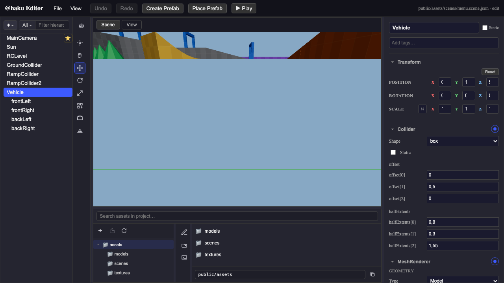
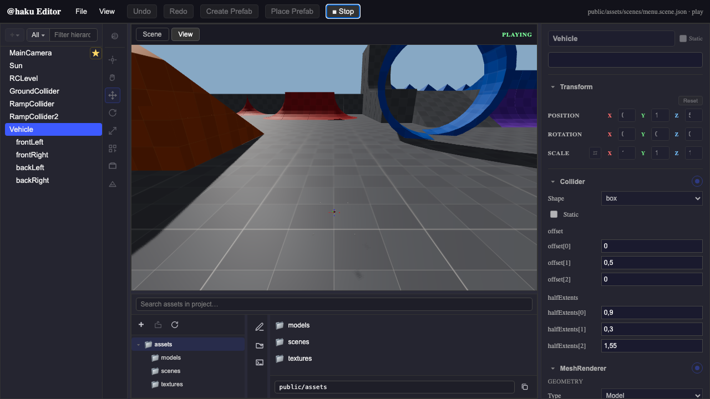
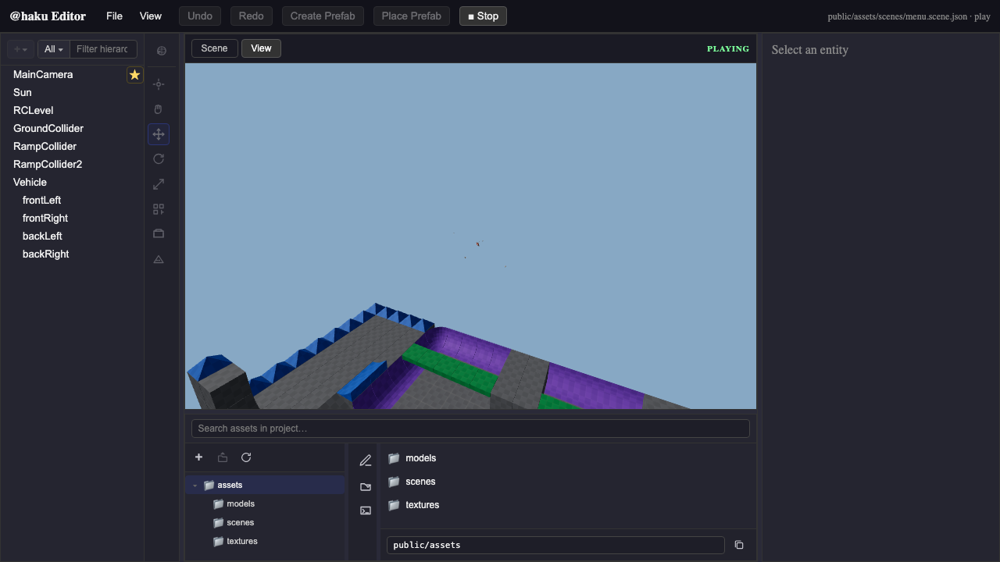
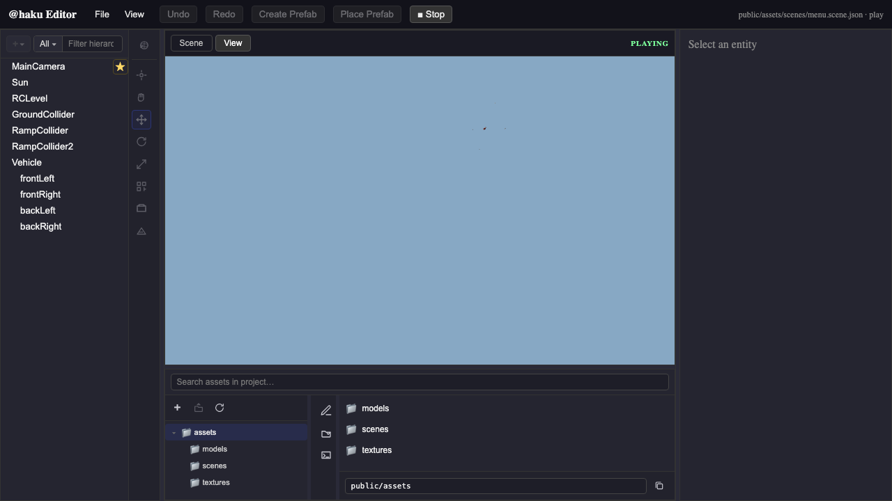
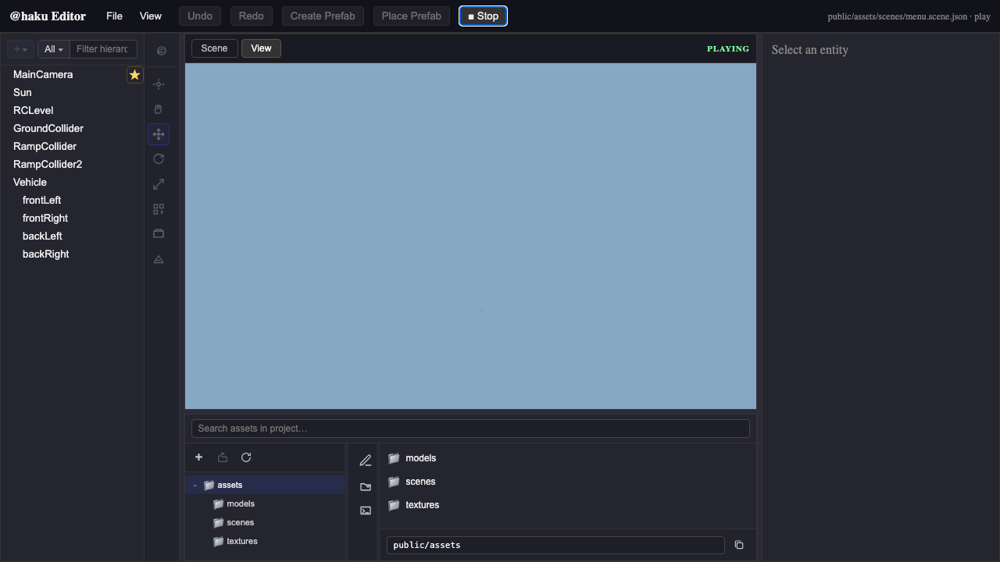
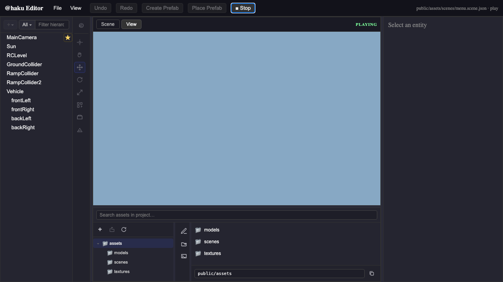

T01.39 — M1 scene (iteration 2)

01 — Editor: M1 scene loaded, Vehicle selected

02 — Play mode: WASD drive with chase camera

03 — Chase camera mouse orbit

04 — Drive + orbit combined

05 — Fall below Y threshold → auto respawn

06 — Manual R key respawn